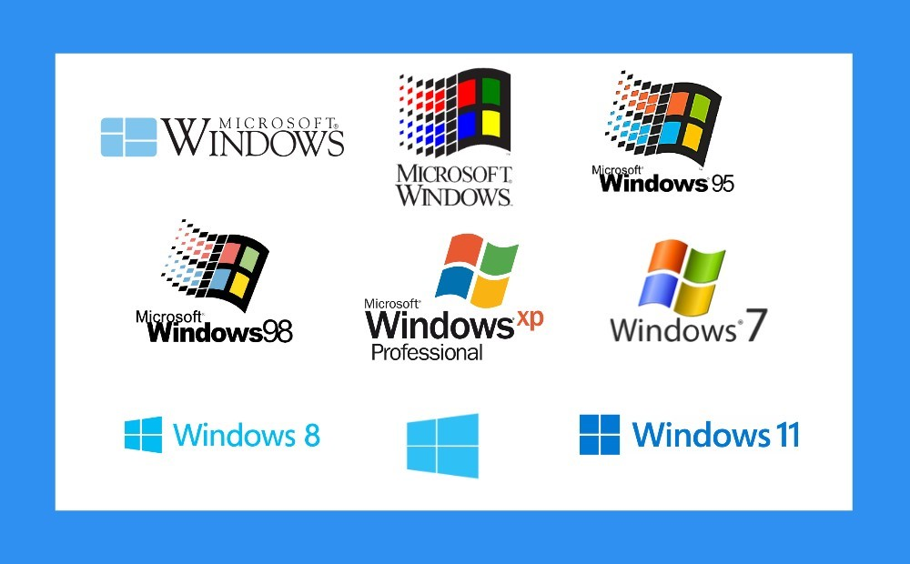
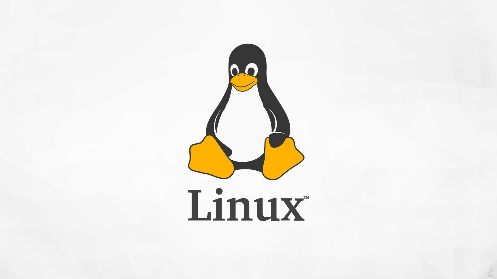

Di dalam dunia teknologi, perangkat seperti laptop, handphone atau smartphone, komputer dan perangkat lainnya pasti memiliki operating system atau sistem operasi. Sistem operasi merupakan perangkat lunak yang dapat mengatur semua aktivitas pada sebuah perangkat atau perangkat keras. Sistem operasi juga merupakan penghubung antara pengguna perangkat tersebut dengan perangkat keras. Terdapat beberapa fungsi dari sistem operasi, yaitu booting pada awal menyalakan sistem komputer, mengontrol aplikasi pada perangkat dan menyediakan ruang untuk menyimpan program, memulai program dan memuat program tersebut hingga terbuka dan dapat berjalan dengan baik, menjaga keamanan data pengguna, menampilkan antarmuka pengguna seperti menerima perintah jika diketik atau lainnya.
-
Microsoft Windows
Microsoft Windows merupakan sistem operasi yang paling banyak digunakan di dunia. Sistem operasi ini dikenal karena tampilan antarmuka yang user-friendly serta dukungan aplikasi yang sangat luas, mulai dari kebutuhan perkantoran hingga multimedia.
 -
Linux
Linux adalah sistem operasi open-source yang dapat dimodifikasi sesuai kebutuhan pengguna. Linux banyak digunakan pada server, sistem embedded, serta lingkungan pengembangan karena stabil, aman, dan ringan.
 -
Mac OS
macOS merupakan sistem operasi yang dikembangkan oleh Apple dan digunakan secara eksklusif pada perangkat Macintosh. Sistem ini dikenal dengan performa yang stabil serta integrasi yang baik dengan ekosistem Apple.

Berikut adalah perkembangan generasi ke generasi dari sistem operasi :
-
Generasi pertama
Generasi awal sistem operasi adalah pada tahun 1945-1955, merupakan awal komputasi mekanik dikarenakan oleh kecepatan manusia untuk menghitung yang terbatas serta manusia masih sering ceroboh atau keliru. Pada generasi awal ini belum ada sistem operasi dan sistem komputer diberi instruksi yang harus dikerjakan langsung oleh pengguna.
-
Generasi kedua
Sistem operasi generasi kedua terdapat pada tahun 1955-1965, pada generasi ini dikenalkan Batch Processing System, yaitu sebuah pekerjaan yang dikerjakan dalam satu rangkaian dan dieksekusi secara berurutan. Pada generasi ini, sistem komputer masih belum dilengkapi sistem operasi seperti FMS dan IBSYS.
-
Generasi ketiga
Sistem operasi generasi ketiga terdapat pada tahun 1965-1980. Pada generasi ini, sistem operasi dikembangkan untuk melayani banyak user dimana para user berkomunikasi lewat terminal secara online ke komputer. Sistem operasi menjadi multi-user, multiprogramming dan multitasking.
-
Generasi keempat
Sistem operasi generasi keempat terdapat pada tahun 1980-2000-an, pada generasi ini, sistem operasi sudah menggunakan Graphical User Interface (GUI) juga era komputasi mulai tersebar.
-
Generasi kelima
Generasi selanjutnya diperkenalkan sistem operasi yang terdapat dalam sebuah sistem operasi dan sistem operasi mobile pada perangkat mobile seperti laptop, poket PC, PDA, netbook, dan notebook. Sistem operasi jaringan virtual juga mulai berkembang sehingga dalam satu jaringan hanya diinstal satu sistem operasi di perangkat server. Pada generasi ini juga diperkenalkan virtualization system yaitu satu komputer dapat dikloning secara virtual agar menjadi lebih dari satu komputer yang dapat bekerja bersama. Cross Platform Operating System dapat menggabungkan dua atau lebih sistem operasi (contohnya adalah Linux dan Windows). Terdapat juga iCloud yang diperkenalkan pada generasi ini. iCloud dapat memungkinkan para user untuk mensinkronisasikan data seperti foto, musik, serta dokumen dari satu perangkat ke perangkat lainnya dalam waktu yang bersamaan.